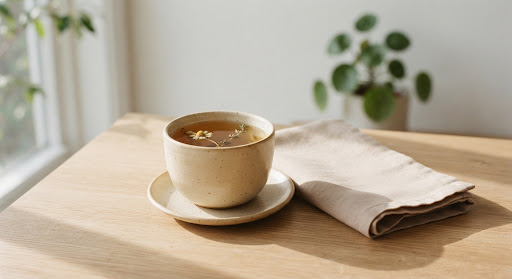

가장 최근 · 11월 1일 · 아침 공복
58.4kg
4주 동안 58kg대에서 비슷해요. 하루 사이 오르내림은 흔한 일이에요.
최근 4주 몸무게
3주차는 재지 않아 점선으로 이어요
1주차
2주차
3주차
4주차

야식 2번 · 외식 1번 · 운동 2번
몸무게는 같은 시간대(아침 공복)에 잰 것끼리 비교해요.
보기
아침과 저녁에 잰 몸무게는 서로 다를 수 있어요.
재지 못한 주는 비워 둬요. 다음에 잴 때 이어서 보면 돼요.